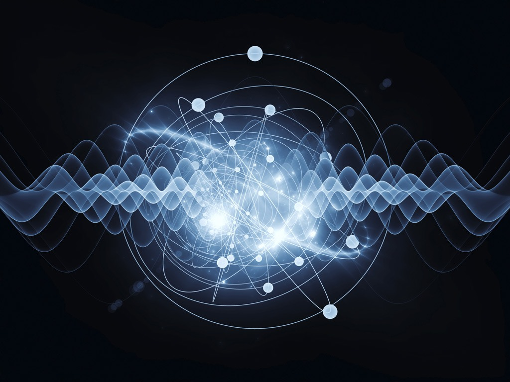

Fisica Cuantica
La física cuántica es uno de los grandes logros del intelecto humano y es la base de la comprensión de los fenómenos naturales. La física clásica es un límite de la cuántica. La física cuántica explica el átomo, el enlace químico, las moléculas, la interacción de la luz con las partículas, la materia… Aunque la física cuántica describe
el mundo a escala atómica podemos observar sus consecuencias a escala macroscópica en las propiedades térmicas (como la radiación), ópticas (como los colores), eléctricas (como la clasificación entre aislantes, metales y semiconductores en los sólidos cristalinos) y magnéticas (como el ferromagnetismo, antiferromagnetismo y otros ordenes
magnéticos de la materia). La física cuántica tiene a su vez importantes aplicaciones tecnológicas como la invención del transistor y por lo tanto del ordenador y es la base de la mayoría de la alta tecnología electrónica que utilizamos hoy en dia.
